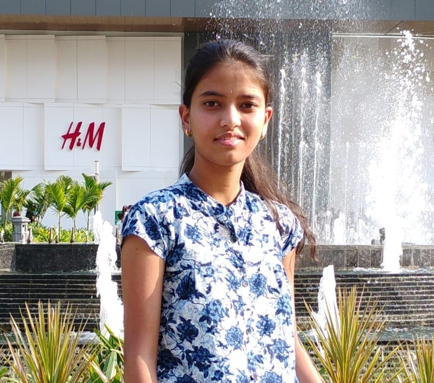

Disha Gaikwad

Summary
Hi, I’m Disha Gaikwad, a second-year Computer Engineering student with a deep passion for technology and problem-solving.
I believe in constantly pushing myself to learn and grow, both academically and personally.
My hard-working nature drives me to tackle challenges with determination, always striving to find innovative solutions.
Whether it's coding, system design, or exploring new tech trends, I am always eager to expand my knowledge and skills.
With a strong focus on both teamwork and individual development, I aim to contribute meaningfully to the world of tech and make a positive impact.
Education
UNDER GRADUATE
HSC : 89.50 %
SSC: 99.60 %
Languages
Skills
- Communication Skills : ⭐️⭐️⭐️⭐️
- Analytical Thinking : ⭐️⭐️⭐️⭐️⭐️
- Problem Solving : ⭐️⭐️⭐️
Other